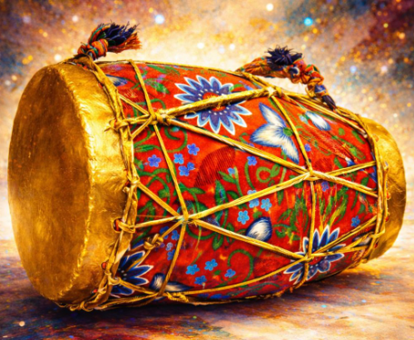
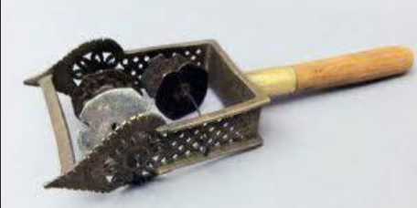
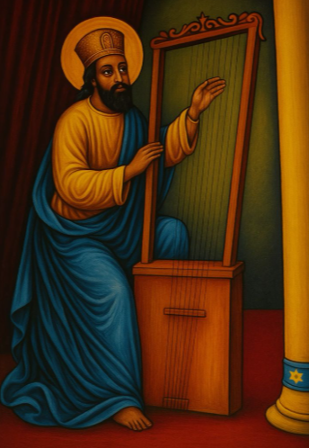

ከበሮ (Kebero)
The Kebero is a traditional Ethiopian drum with a hollow wooden body, known for its deep, rhythmic beats. Played with hands, it sets the rhythm for hymns, and other religious ceremonies, especially in weddings, festivals, and the Ethiopian Orthodox Church.


ጽናጽል (Tsnatsl)
The Tsnatsl is a traditional Ethiopian string instrument, often used in folk and religious music. Played by plucking or strumming its strings, it produces melodic sounds that accompany dances, songs, and cultural ceremonies. Its distinctive tones add richness and depth to Ethiopia’s musical heritage.
በገና (Begena)
The Begena is a large Ethiopian lyre, sometimes called the “harp of David.” With its deep, soothing tones, it is primarily played in religious ceremonies, especially during Lent and other Ethiopian Orthodox Church events. Revered for its spiritual sound, the Begena holds a sacred place in Ethiopia’s musical and cultural history.
